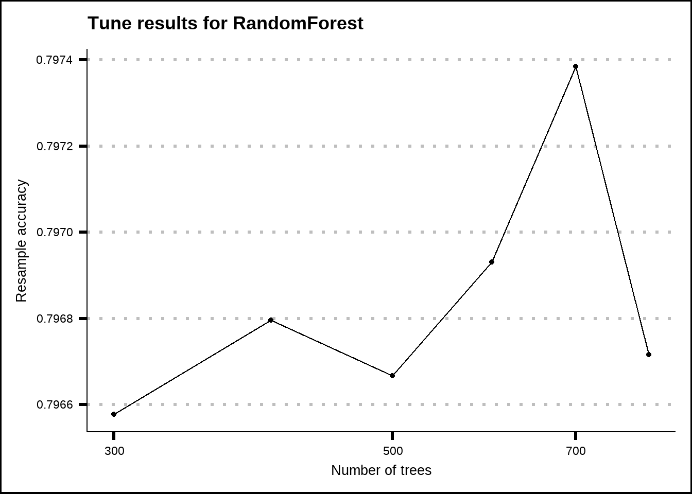

8 Final model exploration
Let’s summarise what we have so far:
A variable set with second level interactions that we think offer the best accuracy that I can handle with my computational power
A set of tuning parameters for several models that we think are likely to be optimal
Now we must decide which model to use. There are many options but I will limit myself to three: GLM, RandomForest and Lasso/Ridge. Before we get to the models, let’s first summarise all the preprocessing of the training data that we’ve done.
8.1 Summarise preprocess
# Create group variables, seperate CabinNumber, Deck and Side from Cabin
train2 <- useful_features(train)
# Replace structurally missing NA
train3 <- my_na_replace(train2)
train3 <- useful_features(train3)
# KNN impute remaining missing values
train3_for_knn <- train3 %>%
mutate(across(.cols = where(is.factor), .fns = as.character))
vars_to_impute <- c("HomePlanet", "CryoSleep", "Destination", "Age", "VIP", "RoomService", "FoodCourt", "ShoppingMall",
"Spa", "VRDeck", "Deck", "Side", "CabinNumber", "LastName")
vars_for_imputing <- c("HomePlanet", "CryoSleep", "Destination", "Age", "VIP", "RoomService", "FoodCourt",
"ShoppingMall", "Spa", "VRDeck", "PassengerGroup", "Deck", "Side", "CabinNumber",
"PassengerGroupSize", "DestinationsPerGroup", "CabinsPerGroup",
"CryoSleepsPerGroup", "VIPsPerGroup", "LastNamesPerGroup")
train3_noNA <- train3_for_knn[complete.cases(train3_for_knn),]
knn_impute_rec <- recipe(Transported ~ ., data = train3_noNA) %>%
step_normalize(Age, CabinNumber, RoomService, FoodCourt, ShoppingMall, Spa, VRDeck) %>%
step_impute_knn(recipe = ., all_of(vars_to_impute), impute_with = imp_vars(all_of(vars_for_imputing)), neighbors = 5)
set.seed(8584)
knn_impute_prep <- knn_impute_rec %>% prep(strings_as_factors = FALSE)
set.seed(8584)
knn_impute_bake <- bake(knn_impute_prep, new_data = train3_for_knn)
knn_impute_res <- knn_impute_bake %>%
mutate(across(.cols = c(Age, CabinNumber, RoomService, FoodCourt, ShoppingMall, Spa, VRDeck),
.fns = ~ rev_normalization(.x, knn_impute_prep)))
# Fixed KNN imputation where structural missing rules were broken
fixed_knn <- fix_knn(knn_impute_res)
train4 <- useful_features2(fixed_knn)
# Add new features we've discovered from our visual exploration
train5 <- add_grp_features(train4)
train6 <- add_name_features(train5)
# Get our variables in order for modelling
train7 <- train6 %>%
select(-c(Cabin, Name, LastName, PassengerCount, HomePlanetsPerGroup)) %>%
mutate(across(.cols = c(PassengerGroupSize, Solo, LargeGroup, TravelTogether, tidyselect::ends_with("PerGroup")),
.fns = as.integer))
my_vars <- data.frame(Variables = names(train7)) %>%
mutate(Roles = if_else(Variables %in% c("PassengerId"), "id", "predictor"),
Roles = if_else(Variables == "Transported", "outcome", Roles))
# final_interactions <- rfe_vars_best2 %>%
# select(ForFormula, RevFormula) %>%
# unlist() %>%
# unname() %>%
# unique(.) %>%
# str_flatten(., collapse = "+") %>%
# str_c("~", .) %>%
# as.formula(.)
#
# save(final_interactions, file = "Final interactions.RData")
load("Final interactions.RData")
set.seed(8584)
final_split <- initial_split(train7, prop = 0.8)
final_train <- training(final_split)
final_test <- testing(final_split)
final_folds <- vfold_cv(final_train, v = 10, repeats = 5)
final_rec_int <- recipe(x = final_train, vars = my_vars$Variables, roles = my_vars$Roles) %>%
step_normalize(Age, RoomService, FoodCourt, ShoppingMall, Spa, VRDeck, TotalSpent, CabinNumber, LastNameAsNumber, PassengerGroup,
TotalSpentPerGroup) %>%
step_dummy(all_nominal_predictors()) %>%
step_interact(final_interactions) %>%
step_zv(all_predictors()) %>%
step_corr(all_numeric_predictors(), threshold = 0.5)
final_rec <- recipe(x = final_train, vars = my_vars$Variables, roles = my_vars$Roles) %>%
step_normalize(Age, RoomService, FoodCourt, ShoppingMall, Spa, VRDeck, TotalSpent, CabinNumber, LastNameAsNumber, PassengerGroup,
TotalSpentPerGroup) %>%
step_dummy(all_nominal_predictors()) %>%
step_zv(all_predictors()) %>%
step_corr(all_numeric_predictors(), threshold = 0.5)8.2 GLM
glm_final_bake <- final_rec %>%
prep() %>%
bake(new_data = NULL)
my_acc <- metric_set(accuracy)
pen_ctrl <- control_grid(verbose = TRUE, save_pred = TRUE, save_workflow = TRUE)
pen_grid <- expand.grid(mixture = seq(.2, 1, by = .2), penalty = 10^seq(-4, -1, by = 0.1))
glm_final_mod <- logistic_reg() %>%
set_engine("glm", family = "binomial")
glm_final_wf <- workflow() %>%
add_recipe(final_rec) %>%
add_model(glm_final_mod)
set.seed(8584)
glm_final_fit <- fit(glm_final_wf, final_train)
#> Warning: glm.fit: fitted probabilities numerically 0 or 1
#> occurred
glm_final_pred <- bind_cols(Actual = final_test$Transported, predict(glm_final_fit, final_test))
glm_final_acc_int <- accuracy(data = glm_final_pred, truth = Actual, estimate = .pred_class)
glm_final_acc_int
#> # A tibble: 1 × 3
#> .metric .estimator .estimate
#> <chr> <chr> <dbl>
#> 1 accuracy binary 0.791The results from the GLM model aren’t great but are close to the ones we expected from our resampling and feature evaluation process.
8.3 GLMNET Lasso/Ridge
best_glm_params <- select_best(pen_int_tune)
glmnet_final_mod <- logistic_reg(penalty = pluck(best_glm_params$penalty), mixture = pluck(best_glm_params$mixture)) %>%
set_engine("glmnet", family = "binomial")
glmnet_final_wf <- glm_final_wf %>%
update_model(glmnet_final_mod)
set.seed(8584)
glmnet_final_fit <- fit(glmnet_final_wf, final_train)
glmnet_final_pred <- bind_cols(Actual = final_test$Transported, predict(glmnet_final_fit, final_test))
glmnet_final_acc <- accuracy(data = glmnet_final_pred, truth = Actual, estimate = .pred_class)
glmnet_final_acc
#> # A tibble: 1 × 3
#> .metric .estimator .estimate
#> <chr> <chr> <dbl>
#> 1 accuracy binary 0.7878.4 RandomForest
my_acc <- metric_set(accuracy)
rf_ctrl <- control_grid(verbose = TRUE, save_pred = TRUE, save_workflow = TRUE)
rf_grid <- expand.grid(trees = c(500, 2000, 10000), min_n = 5)
rf_final_mod_tune <- rand_forest(trees = tune(), min_n = tune()) %>%
set_mode("classification") %>%
set_engine("randomForest")
# my_cluster <- makeCluster(detectCores() - 1, type = 'SOCK')
# registerDoSNOW(my_cluster)
# clusterExport(cl = my_cluster, "final_interactions")
#
# system.time({
# set.seed(8584)
# rf_final_tune <- rf_final_mod_tune %>%
# tune_grid(final_rec, resamples = final_folds, metrics = my_acc, control = rf_ctrl, grid = rf_grid)
# })
#
# save(rf_final_tune, file = "Final randomForest tune.RData")
#
# stopCluster(my_cluster)
# unregister()
load("Final randomForest tune.RData")
show_best(rf_final_tune, metric = "accuracy", n = 20) %>%
ggplot(aes(x = trees, y = mean)) +
geom_line() +
geom_point() +
scale_x_log10() +
labs(title = "Tune results for RandomForest", x = "Number of trees", y = "Resample accuracy")

The results from the model tuning indicate that the improvement is very limited with more trees than somewhere around 2000 so I will assume this as the optimal. With tree based models, too much trees can overfit the data so it’s a good idea not to
rf_final_mod <- rand_forest(trees = 2000, min_n = 5) %>%
set_mode("classification") %>%
set_engine("randomForest")
rf_final_wf <- glm_final_wf %>%
update_model(rf_final_mod)
set.seed(8584)
rf_final_fit <- fit(rf_final_wf, final_train)
rf_final_pred <- bind_cols(Actual = final_test$Transported, predict(rf_final_fit, final_test))
rf_final_acc <- accuracy(data = rf_final_pred, truth = Actual, estimate = .pred_class)
rf_final_acc
#> # A tibble: 1 × 3
#> .metric .estimator .estimate
#> <chr> <chr> <dbl>
#> 1 accuracy binary 0.799